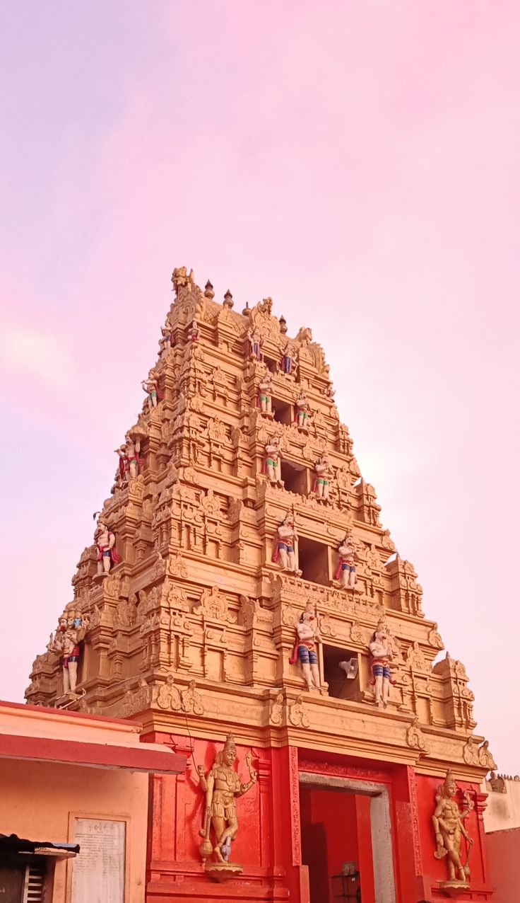

.png)
Welcome to MandirYatra – your spiritual companion for divine journeys across India. We connect devotees with sacred temples and important pilgrimage destinations, making it easier to explore places of faith and devotion.
Discover India’s ancient temples and rich spiritual heritage. MandirYatra helps you find temple addresses, learn their history, and view beautiful temple images, guiding you on your spiritual journey with knowledge and devotion.
Explore famous and ancient temples across India and learn about their spiritual importance, history, Images
Discover sacred pilgrimage destinations and plan meaningful spiritual journeys to holy places across the country.
Find helpful information and guidance to deepen your spiritual journey and connect with divine traditions.
Experience India’s rich spiritual culture, temple architecture, and timeless traditions followed for generations.
Feel the peace and devotion of sacred temples while exploring spiritual experiences that inspire faith and inner calm.
Guiding Souls on Sacred Journeys
Helping devotees explore temples and connect with divine energy through meaningful spiritual journeys.
Dedicated to helping devotees discover temples and experience spirituality with ease and devotion.
Guiding devotees to famous temples and pilgrimage destinations across India.
Bringing people closer to spiritual traditions and divine experiences.
Sacred Moments & Spiritual Journeys

We'd love to hear your thoughts about MandirYatra! Please share your feedback with us.
Give Feedback